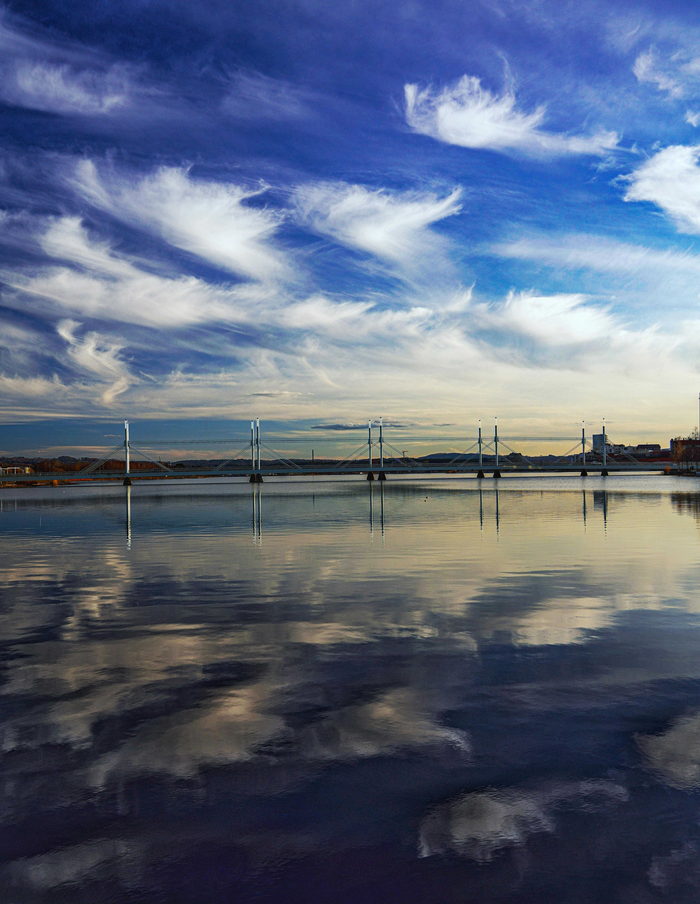

Välkommen till Jönköping
— En pärla vid Vätterns strand
Vädret i Jönköping
Jönköping har ett varierat klimat med kalla vintrar och varma somrar. Under sommaren kan temperaturen stiga till över 25 grader, vilket gör det perfekt för utomhusaktiviteter och bad i Vättern.

Kultur och Tradition
Staden har en rik kultur med många museer, gallerier och historiska byggnader. Här kan du uppleva både modern konst och historiska utställningar. Jönköping är också känt för sina många festivaler och evenemang som hålls året runt.
Turism i Jönköping
Jönköping är en populär turistdestination med sina vackra parker, stränder och närhet till naturen. Här finns något för alla, oavsett om du gillar att vandra, bada eller bara koppla av i en pittoresk miljö.
Vättern - En Mäktig Sjö
Vättern är Sveriges näst största sjö och erbjuder fantastiska möjligheter för fiske, segling och andra vattensporter. Sjöns kristallklara vatten och vackra omgivningar gör den till ett måste för alla som besöker Jönköping.
Varma Sommardagar
Under sommaren blir Jönköping extra levande. De varma dagarna lockar både lokalbefolkning och turister att njuta av stadens många utomhusaktiviteter. Det finns många caféer och restauranger där du kan njuta av en god måltid eller en svalkande dryck medan du tar in den vackra utsikten.